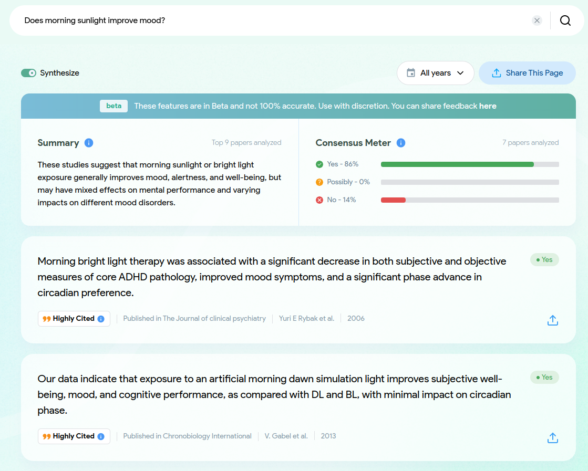
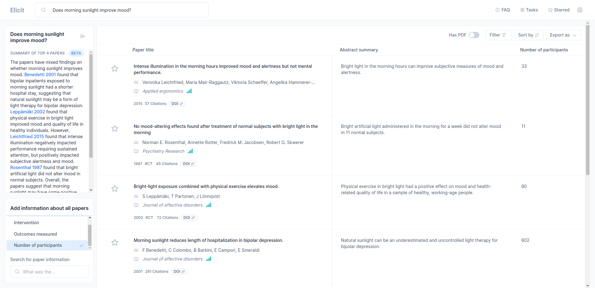
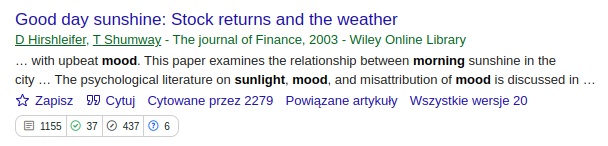
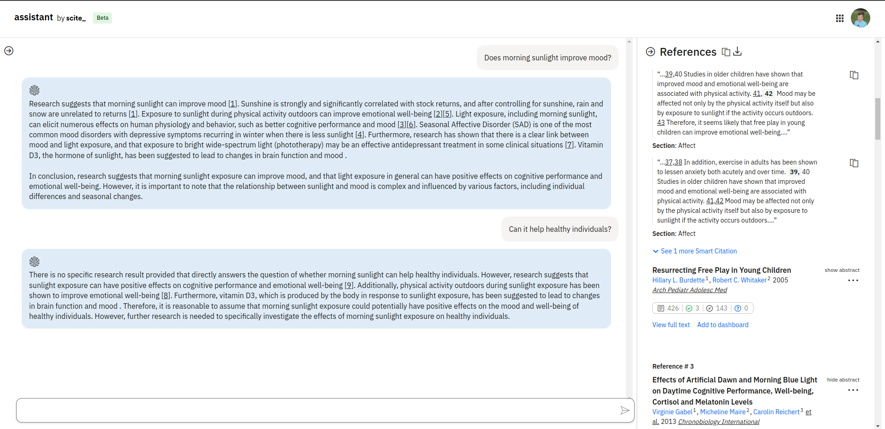
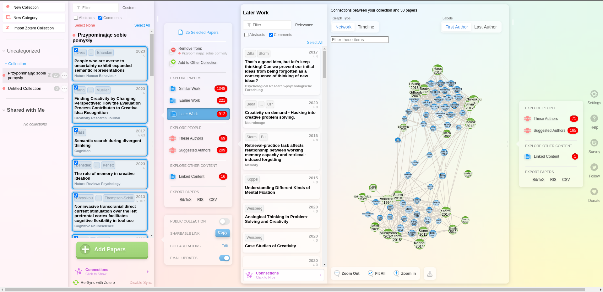
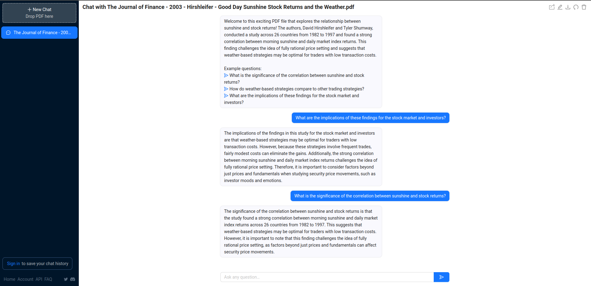

Lepiej niż ChatGPT
AI do pomocy w researchu naukowym
Jeśli jesteśmy studentami, naukowcami, popularyzatorami, musimy często przedzierać się przez morze publikacji naukowych. Zazwyczaj w tym celu korzystamy z Google Scholar, który szuka słów kluczowych w tytułach i abstraktach. Dobranie słów kluczowych tak, żeby uzyskać to i tylko to, czego potrzebujemy, to sztuka sama w sobie.
Załóżmy, że zauważyliśmy któregoś ranka, że lepiej się czujemy, jeśli rano wystawimy się na jasne światło. Może nie dosłownie w chwili przebudzenia, ale że nasz nastrój jest lepszy, jak rano jest jasno. Być może tak jest? Może to ewolucyjne dostosowanie do tego, żeby nie wychodzić w deszcz, bo łatwo sobie coś zrobić? Jednak czy ktoś to sprawdził? Otwieramy więc podstawowe narzędzie naukowców, Google Scholar, i puszczamy nasze zapytanie. Ponieważ jest to zwykła wyszukiwarka, musimy przerobić nasze zapytanie na słowa kluczowe. To właśnie umiejętność dobrania skutecznego zapytania jest najtrudniejsza w opanowaniu.
Wyszukujemy więc coś w rodzaju „morning sunlight mood” I nagle się okazuje, że znalezione artykuły nie mówią o tym, czego chcemy się dowiedzieć. Jeśli w ogóle mówią o świetle słonecznym i nastroju, to w chorobie dwubiegunowej, którą większość ludzi nie jest dotknięta. Większość artykułów jest też bardzo stara. Musimy więc przeformułować nasze zapytanie, może zawęzić zakres dat i szukać dalej. W końcu znajdziemy interesujący nas artykuł i śledząc cytowania (w tej pracy, ale też artykuły cytujące znaleziony przez nas artykuł) możemy dotrzeć do bogactwa literatury na ten temat. Tak to się robiło do tej pory.
1 ChatGPT
Nagle na scenę wchodzi ChatGPT. Mamy do swojej dyspozycji potężne narzędzie, które zna wszystkie artykuły naukowe XXI wieku. Może jak mu zadamy odpowiednie pytanie, to sam nam podsunie artykuły? Nie zaszkodzi spróbować! Jeśli to zadziała, nagle nasza praca może stać się po wielokroć prostsza.
Okazuje się, że ChatGPT potrafi wskazać takie artykuły, ale korzystanie z niego jest opatrzone ryzykiem. Jeśli wskazane przez algorytm artykuły sprawdzimy, niechybnie okaże się, że co najmniej część z nich nie istnieje. Jest to zjawisko zwane halucynacjami sztucznej inteligencji. Ponieważ GPT to tylko model językowy, nie potrafi odróżnić istniejących artykułów od nieistniejących. Chce nam odpowiedzieć na pytanie, więc generuje odpowiedź. Z doświadczenia mogę powiedzieć, że szansa na podanie prawdziwych artykułów rośnie, jeśli poprosimy ChatGPT o dokładne cytowania. Jednak wyniki ciągle nie są zachwycające. Z jednego prostego powodu – ChatGPT nie służy do tego.
2 Consensus
Na fali popularności AI powstało mnóstwo narzędzi o różnym, szerszym lub węższym zastosowaniu. Na przykład istnieje rebbe.io, czyli internetowy rabin oparty o sztuczną inteligencję, któremu możemy zadawać pytania o Halachę, Torę czy ogólnie o judaizm1. Co prawda Żydów jest prawie dwa razy więcej niż naukowców, ale skoro Żydzi mają chatbota zaprojektowanego specjalnie do swoich celów, można podejrzewać, że naukowcy też mają coś bardziej specyficznego niż ChatGPT. Jednym z takich narzędzi jest Consensus.

Consensus to darmowa aplikacja (albo raczej strona internetowa), która wykorzystuje modele językowe jak GPT do odnajdywania artykułów naukowych na zadany temat. Wykorzystanie AI pozwala na zadanie pytania w sposób naturalnym językiem, co pozwala uniknąć godzin szukania odpowiednich słów. Co jednak ciekawe, Consensus nie tylko znajduje artykuły, ale też konkretne fragmenty tych artykułów, które sztuczna inteligencja uznaje za potencjalnie użyteczne.
Dodatkowo jeśli zadajemy konkretne pytanie, Consensus podsumuje nam kilka najważniejszych artykułów. Jeśli zadaliśmy pytanie typu tak/nie, Consensus poda nam też (o ile będzie w stanie) jaka część znalezionych przez niego artykułów popiera naszą tezę, a jaka część jej nie popiera.
3 Elicit
Kolejnym darmowym narzędziem AI dla naukowców jest Elicit. Ponownie możemy zadać pytanie naturalnym językiem i ponownie dostaniemy w odpowiedzi listę artykułów. Tym razem jednak na pierwszy plan nie będą wysuwane cytaty z prac, ale jednozdaniowe podsumowania abstraktów.

Największa moc Elicit pojawia się jednak w panelu po lewej stronie. AI generuje nam podsumowanie kilku najważniejszych arykułów wraz z cytowaniami, ale także pozwala nam wyciągać konkretne informacje z artykułów. Dla przykładu na obrazku widać, jak poprosiłem o wypisanie liczby osób badanych. Co ciekawe, poza parametrami z listy możemy też wpisywać własne parametry, które AI wyszuka dla nas w artykułach i pokaże w tabeli.
4 scite_
Kolejne narzędzie ma tę wadę, że swoje kosztuje, co warto podkreślić w pierwszym zdaniu. Jednak nie cała aplikacja jest płatna i część jej funkcji jest dostępna za darmo. Pełną wersję możemy uzyskać za cenę ok. 380 zł rocznie2 (lub ok. 50 zł miesięcznie). Nie będę tutaj opisywał wszystkich funkcji scite_, bo tak nazywa się nasza kolejna aplikacja, ale skupię się na dwóch kluczowych.
Po pierwsze, scite_ posiada dodatek do przeglądarki, który wzbogaca nasze wyszukiwanie w Google Scholar o tabelkę z dodatkowymi informacjami o cytowaniach. O ile liczba cytowań to nic wielkiego, już sam Scholar podaje nam łączną liczbę cytowań danego artykułu, o tyle scite_ dodatkowo podzieli nam te cytowania na popierające tezę danego artykułu oraz wchodzące z nią w polemikę. Dzięki temu możemy oszacować rzeczywisty wpływ danej pracy na środowisko naukowe, czego przecież miarą są cytowania.

Po drugie od jakiegoś czasu mamy do naszej dyspozycji scite assistant, czyli właściwie to, o co nam chodziło od początku – ChatGPT do rozmowy o artykułach naukowych. Naturalnie scite assistant artykułów nie wymyśla, każda informacja ma przypis, a przypisy są zebrane we wspólną tabelę. W przeciwieństwie do poprzednich narzędzi, z asystentem możemy toczyć dialog, jak na prawdziwego chatbota przystało. Ważną jego cechą jest też to, że potrafi wskazać, że badań na jakiś temat nie ma (w jego bazie). Szczególnie użyteczne może być to dla naukowców, którzy w swoich badaniach chcą wytwarzać nową wiedzę.

5 ResearchRabbit
Zgoła innym rodzajem narzędzia jest ResearchRabbit. Nie jest to wyszukiwarka, ale raczej organizer do bibliografii. Jeśli mamy już zgromadzoną bibliografię na dany temat, ResearchRabbit może nam zwizualizować połączenia między artykułami, wyciągnąć często przewijających się autorów, ale przede wszystkim podsunąć nam późniejsze, wcześniejsze lub podobne artykuły. Dzięki temu nasza baza wiedzy może rosnąć, powiększać się o coraz to nowe wątki, podobne do tego, co nas interesuje, ale także możemy dostrzec powiązania między naszą dziedziną, a innymi, może bardziej odległymi dziedzinami.

Narzędzie jest darmowe i o tyle wygodne, że można je połączyć z Zotero, który jest menedżerem bibliografii z wyboru. Nie musimy się więc rozdrabniać i trzymać naszej bibliografii w kilku miejscach.
6 ChatPDF
Wbrew obiegowej opinii, znalezione artykuły wypada przeczytać. Czasami jednak nie potrzebujemy dokładnie znać całości artykułu, a wystarczą nam konkretne informacje. Możemy ich szukać tradycyjnie, ale możemy też wykorzystać ChatPDF. Jest to narzędzie, do którego możemy wgrać plik .pdf z naszym artykułem i zacząć zadawać pytania. Dzienny darmowy limit to 3 artykuły.

7 Trinka
Ostatnie narzędzie, które chciałbym omówić, nie tyle służy do znajdowania artykułów, ile do pisania własnych. Język artykułów naukowych to rządząca się specyficznymi regułami odmiana języka angielskiego3. Łatwo jest nie dotrzymać wszystkich form tego języka. Trinka to aplikacja, która może nam w tym pomóc. Sprawdza nam gotowy tekst, wskazuje na ewentualne błędy i sugeruje alternatywne formy. Darmowy plan pozwala na sprawdzenie 10 000 słów miesięcznie. Wersja premium to koszt $ 80 rocznie, w ramach których otrzymujemy przede wszystkim brak limitu słów oraz dodatek do Worda.
8 Podziękowanie
Wpis opracowałem m.in. na podstawie tweetów dr. Mushtaqa Bilala.